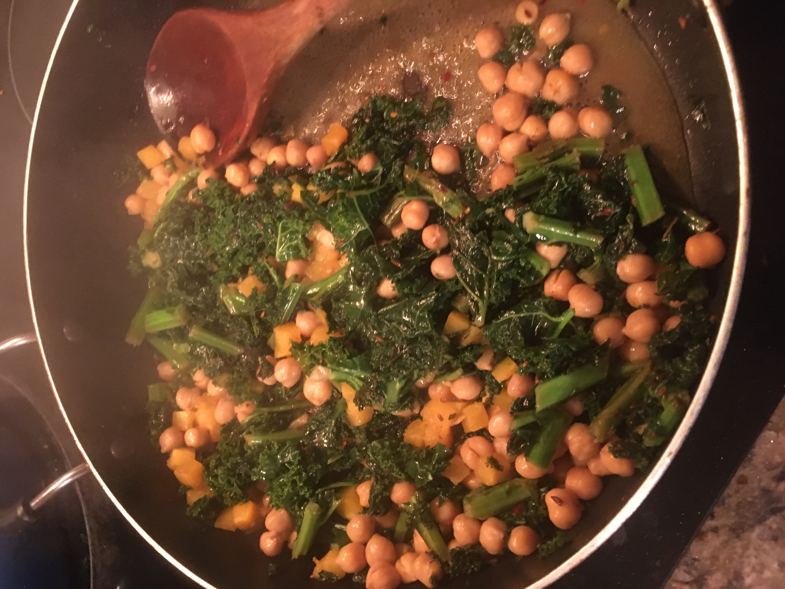

COVID goulash

Description
Born of emergency, this hearty dish may become your next dinnertime staple.
Ingredients
- One tablespoon of olive oil
- One can of chickpeas
- Half a big bag of frozen chopped kale
- Liberal amounts of whole cumin
- Liberal amounts of powdered cumin
- Liberal amounts of paprika
- Salt and pepper
- Hot sauce or hot pepper flakes
Steps
- Heat up whole cumin in oil at high heat until hot.
- Add powdered cumin and paprika and stir once.
- Add all of the kale and stir until cooked down.
- Cook for about 10 minutes, then turn down the heat and add the chickpeas.
- Cook for a few more minutes, then add salt and pepper and hot sauce or flakes.
- Cook for a few more minutes. Stir and enjoy.